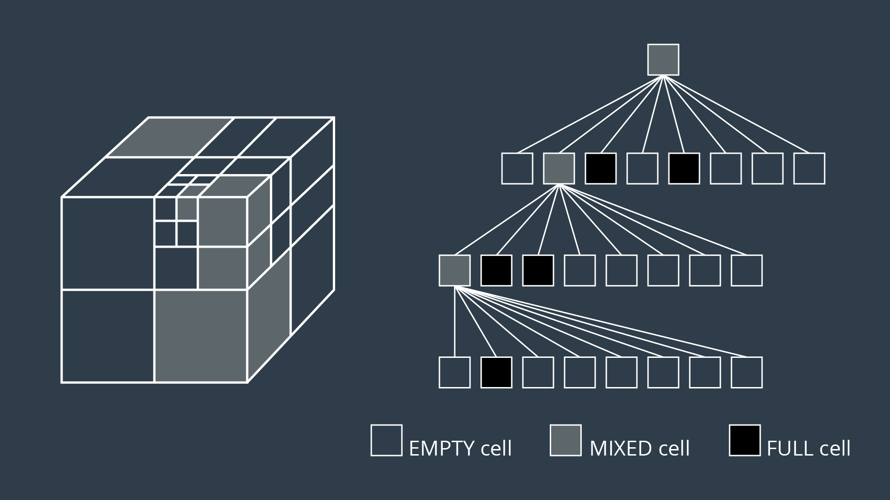

Approximate Cell Decomposition
Approximate cell decomposition divides a configuration space into discrete cells of simple, regular shapes - such as rectangles and squares (or other multidimensional equivalents). Aside from simplifying the computation of cells, this method also supports hierarchical decomposition of space.
Simple Decomposition
A 2-dimensional configuration space can be decomposed into a grid of rectangular cells. Then, each cell could be marked or empty, as before. A search algorithm can then look for a sequence of free cells to connect the start node to the final node.
Such a method is more efficient than exact cell decomposition, but it losses its completeness. It is possible that a particular configuration space contains a feasible path, but the resolution of the cells results in some of the cells encompassing the path to be marked "full" due to the presence of obstacles. A cell will be marked "full" whether 99% of the space is occupied by an obstacle or a mere 1%. Evidently, this is not practical.
Iterative Decomposition (QuadTree)
An alternate method of partitioning a space into simple cells exists. Instead of immediately decomposing the space into small cells of equal size, the method recursively decomposes a space into four quadrants. Each quadrant is marked full, empty, or a new label called 'mixed' - used to represent cells that are somewhat occupied by an obstacle, but also contain some free space. If a sequence of free cells cannot be found from start to goal, then the mixed cells will be further decomposed into another four quadrants. Through this process, more free cells will emerge, eventually revealing a path if one exists.
The 2-dimensional implementation of this method is called quadtree decomposition.
Algorithm
Decompose the configuration space into four cells, label cells free, mixed or full.
Search for a sequecne of free cells that connect the start node to the goal node.
If such a sequence exists:
\quadReturn path
Else:
\quadFurther decomposes the mixed cells

Octrees
The 3-dimensional equivalent of quadtrees are octrees, depicted in the image below. The method discretizing a space with any number of dimensions follows the same procedure as the algorithm described above, but expanded to accommodate the additional dimensions.

Although exact cell decomposition is a more elegant method, it is much more computationally expensive than approximate cell decomposition for non-trivial environments. For this reason, approximate cell decomposition is commonly used in practice.
Advantage
With enough computation, approximate cell decomposition approaches completeness. However it is not optimal = the resultant path depends on how cells are decomposed. Approximate cell decomposition find the obvious solution quickly. It is possible that the optimal path squeezes through a minuscule opening between obstacles, but the resultant path takes a much longer route through wide open spaces - one that the recursively-decomposing algorithms would find first.
Disadvantage
Approximate cell decomposition is functional, but like all discrete/combinatorial path planning methods - it starts to be computationally intractable for use with high-dimensional environments.